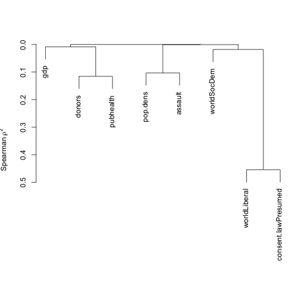
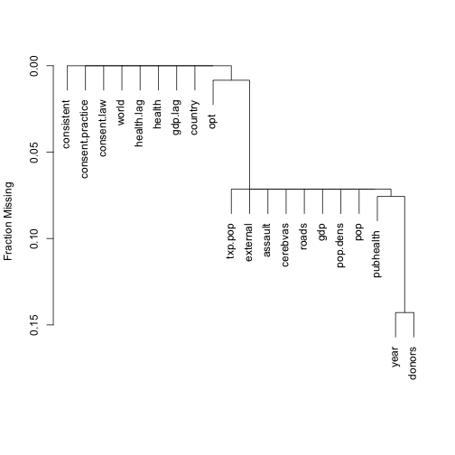
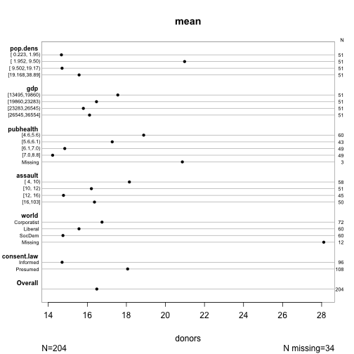
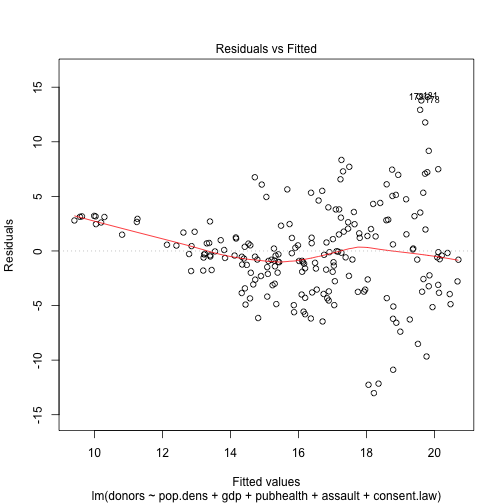
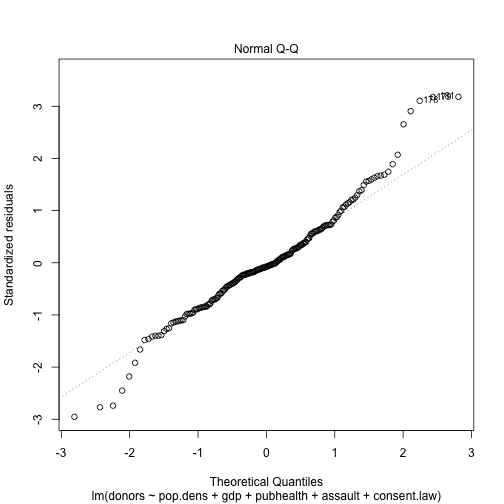
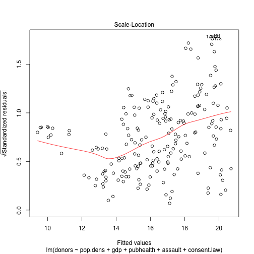
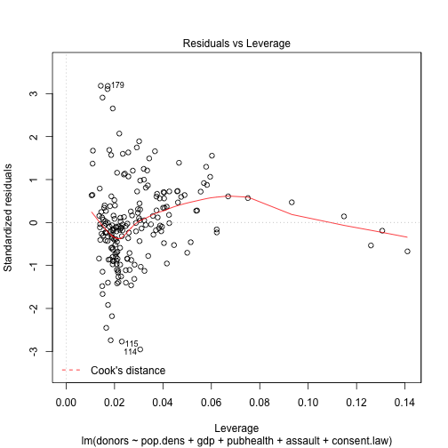
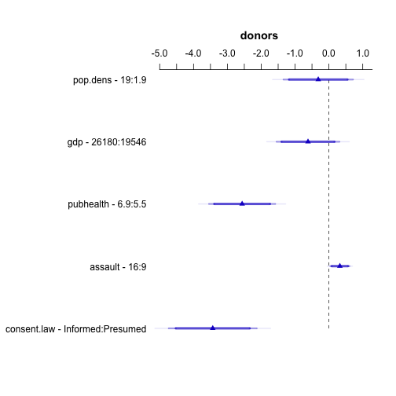
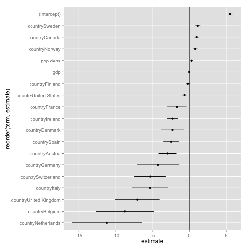
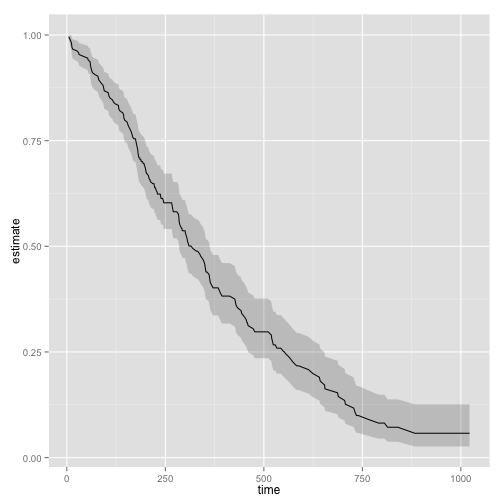

broomEscape key to get an overview of all the slides. On a phone
or tablet, pinch to get the slide overview.Escape again to return to the slide you were looking at. organs.url <- "https://raw.githubusercontent.com/socviz/soc880/gh-pages/data/organ-procurement.csv"
organs.data <- read.csv(url(organs.url), row.names=1)
dim(organs.data)
## [1] 238 20
head(organs.data)
## country year donors pop pop.dens gdp gdp.lag health health.lag
## 1 Australia NA NA 17065 0.22 16774 16591 1300 1224
## 2 Australia 1991 12 17284 0.22 17171 16774 1379 1300
## 3 Australia 1992 12 17495 0.23 17914 17171 1455 1379
## 4 Australia 1993 13 17667 0.23 18883 17914 1540 1455
## 5 Australia 1994 10 17855 0.23 19849 18883 1626 1540
## 6 Australia 1995 10 18072 0.23 21079 19849 1737 1626
## pubhealth roads cerebvas assault external txp.pop world opt
## 1 4.8 137 682 21 444 0.94 Liberal In
## 2 5.4 122 647 19 425 0.93 Liberal In
## 3 5.4 113 630 17 406 0.91 Liberal In
## 4 5.4 111 611 18 376 0.91 Liberal In
## 5 5.4 108 631 17 387 0.90 Liberal In
## 6 5.5 112 592 16 371 0.89 Liberal In
## consent.law consent.practice consistent
## 1 Informed Informed Yes
## 2 Informed Informed Yes
## 3 Informed Informed Yes
## 4 Informed Informed Yes
## 5 Informed Informed Yes
## 6 Informed Informed Yes
## For convenience, let R know year is a time measure.
organs.data$year <- as.Date(strptime(organs.data$year, format="%Y"))
## install.packages("GGally")
library(GGally)
my.vars <- c("donors", "pop", "gdp",
"pubhealth", "assault")
pdf(file="../figures/ggpairs-plot-1.pdf", height=15, width=15)
p <- ggpairs(subset(organs.data, select=my.vars),
upper=list(continuous="smooth"),
lower=list(continuous="points"))
print(p)
## Warning: Removed 34 rows containing non-finite values (stat_density).
## Warning: Removed 34 rows containing missing values (stat_smooth).
## Warning: Removed 34 rows containing missing values (geom_point).
## Warning: Removed 34 rows containing missing values (stat_smooth).
## Warning: Removed 34 rows containing missing values (geom_point).
## Warning: Removed 37 rows containing missing values (stat_smooth).
## Warning: Removed 37 rows containing missing values (geom_point).
## Warning: Removed 34 rows containing missing values (stat_smooth).
## Warning: Removed 34 rows containing missing values (geom_point).
## Warning: Removed 34 rows containing missing values (geom_point).
## Warning: Removed 17 rows containing non-finite values (stat_density).
## Warning: Removed 17 rows containing missing values (stat_smooth).
## Warning: Removed 17 rows containing missing values (geom_point).
## Warning: Removed 21 rows containing missing values (stat_smooth).
## Warning: Removed 21 rows containing missing values (geom_point).
## Warning: Removed 17 rows containing missing values (stat_smooth).
## Warning: Removed 17 rows containing missing values (geom_point).
## Warning: Removed 34 rows containing missing values (geom_point).
## Warning: Removed 17 rows containing missing values (geom_point).
## Warning: Removed 17 rows containing non-finite values (stat_density).
## Warning: Removed 21 rows containing missing values (stat_smooth).
## Warning: Removed 21 rows containing missing values (geom_point).
## Warning: Removed 17 rows containing missing values (stat_smooth).
## Warning: Removed 17 rows containing missing values (geom_point).
## Warning: Removed 37 rows containing missing values (geom_point).
## Warning: Removed 21 rows containing missing values (geom_point).
## Warning: Removed 21 rows containing missing values (geom_point).
## Warning: Removed 21 rows containing non-finite values (stat_density).
## Warning: Removed 21 rows containing missing values (stat_smooth).
## Warning: Removed 21 rows containing missing values (geom_point).
## Warning: Removed 34 rows containing missing values (geom_point).
## Warning: Removed 17 rows containing missing values (geom_point).
## Warning: Removed 17 rows containing missing values (geom_point).
## Warning: Removed 21 rows containing missing values (geom_point).
## Warning: Removed 17 rows containing non-finite values (stat_density).
dev.off()
## quartz
## 2
my.vars <- c("donors", "pop.dens", "gdp",
"pubhealth", "world", "consent.law",
"assault", "opt")
pdf(file="../figures/ggpairs-plot-2.pdf", height=20, width=20)
p <- ggpairs(subset(organs.data, select=my.vars),
upper=list(continuous="smooth", combo="box"),
lower=list(continuous="points", combo="dot"))
print(p)
## Warning: Removed 34 rows containing non-finite values (stat_density).
## Warning: Removed 34 rows containing missing values (stat_smooth).
## Warning: Removed 34 rows containing missing values (geom_point).
## Warning: Removed 34 rows containing missing values (stat_smooth).
## Warning: Removed 34 rows containing missing values (geom_point).
## Warning: Removed 37 rows containing missing values (stat_smooth).
## Warning: Removed 37 rows containing missing values (geom_point).
## Warning: Removed 12 rows containing non-finite values (stat_boxplot).
## Warning: Removed 10 rows containing non-finite values (stat_boxplot).
## Warning: Removed 10 rows containing non-finite values (stat_boxplot).
## Warning: Removed 2 rows containing non-finite values (stat_boxplot).
## Warning: Removed 16 rows containing non-finite values (stat_boxplot).
## Warning: Removed 18 rows containing non-finite values (stat_boxplot).
## Warning: Removed 34 rows containing missing values (stat_smooth).
## Warning: Removed 34 rows containing missing values (geom_point).
## Warning: Removed 18 rows containing non-finite values (stat_boxplot).
## Warning: Removed 12 rows containing non-finite values (stat_boxplot).
## Warning: Removed 4 rows containing non-finite values (stat_boxplot).
## Warning: Removed 34 rows containing missing values (geom_point).
## Warning: Removed 17 rows containing non-finite values (stat_density).
## Warning: Removed 17 rows containing missing values (stat_smooth).
## Warning: Removed 17 rows containing missing values (geom_point).
## Warning: Removed 21 rows containing missing values (stat_smooth).
## Warning: Removed 21 rows containing missing values (geom_point).
## Warning: Removed 6 rows containing non-finite values (stat_boxplot).
## Warning: Removed 5 rows containing non-finite values (stat_boxplot).
## Warning: Removed 5 rows containing non-finite values (stat_boxplot).
## Warning: Removed 1 rows containing non-finite values (stat_boxplot).
## Warning: Removed 8 rows containing non-finite values (stat_boxplot).
## Warning: Removed 9 rows containing non-finite values (stat_boxplot).
## Warning: Removed 17 rows containing missing values (stat_smooth).
## Warning: Removed 17 rows containing missing values (geom_point).
## Warning: Removed 9 rows containing non-finite values (stat_boxplot).
## Warning: Removed 6 rows containing non-finite values (stat_boxplot).
## Warning: Removed 2 rows containing non-finite values (stat_boxplot).
## Warning: Removed 34 rows containing missing values (geom_point).
## Warning: Removed 17 rows containing missing values (geom_point).
## Warning: Removed 17 rows containing non-finite values (stat_density).
## Warning: Removed 21 rows containing missing values (stat_smooth).
## Warning: Removed 21 rows containing missing values (geom_point).
## Warning: Removed 6 rows containing non-finite values (stat_boxplot).
## Warning: Removed 5 rows containing non-finite values (stat_boxplot).
## Warning: Removed 5 rows containing non-finite values (stat_boxplot).
## Warning: Removed 1 rows containing non-finite values (stat_boxplot).
## Warning: Removed 8 rows containing non-finite values (stat_boxplot).
## Warning: Removed 9 rows containing non-finite values (stat_boxplot).
## Warning: Removed 17 rows containing missing values (stat_smooth).
## Warning: Removed 17 rows containing missing values (geom_point).
## Warning: Removed 9 rows containing non-finite values (stat_boxplot).
## Warning: Removed 6 rows containing non-finite values (stat_boxplot).
## Warning: Removed 2 rows containing non-finite values (stat_boxplot).
## Warning: Removed 37 rows containing missing values (geom_point).
## Warning: Removed 21 rows containing missing values (geom_point).
## Warning: Removed 21 rows containing missing values (geom_point).
## Warning: Removed 21 rows containing non-finite values (stat_density).
## Warning: Removed 10 rows containing non-finite values (stat_boxplot).
## Warning: Removed 5 rows containing non-finite values (stat_boxplot).
## Warning: Removed 5 rows containing non-finite values (stat_boxplot).
## Warning: Removed 1 rows containing non-finite values (stat_boxplot).
## Warning: Removed 8 rows containing non-finite values (stat_boxplot).
## Warning: Removed 13 rows containing non-finite values (stat_boxplot).
## Warning: Removed 21 rows containing missing values (stat_smooth).
## Warning: Removed 21 rows containing missing values (geom_point).
## Warning: Removed 9 rows containing non-finite values (stat_boxplot).
## Warning: Removed 10 rows containing non-finite values (stat_boxplot).
## Warning: Removed 2 rows containing non-finite values (stat_boxplot).
## Warning: Removed 12 rows containing missing values (geom_point).
## Warning: Removed 10 rows containing missing values (geom_point).
## Warning: Removed 10 rows containing missing values (geom_point).
## Warning: Removed 2 rows containing missing values (geom_point).
## Warning: Removed 6 rows containing missing values (geom_point).
## Warning: Removed 5 rows containing missing values (geom_point).
## Warning: Removed 5 rows containing missing values (geom_point).
## Warning: Removed 1 rows containing missing values (geom_point).
## Warning: Removed 6 rows containing missing values (geom_point).
## Warning: Removed 5 rows containing missing values (geom_point).
## Warning: Removed 5 rows containing missing values (geom_point).
## Warning: Removed 1 rows containing missing values (geom_point).
## Warning: Removed 10 rows containing missing values (geom_point).
## Warning: Removed 5 rows containing missing values (geom_point).
## Warning: Removed 5 rows containing missing values (geom_point).
## Warning: Removed 1 rows containing missing values (geom_point).
## Warning: Removed 6 rows containing non-finite values (stat_boxplot).
## Warning: Removed 5 rows containing non-finite values (stat_boxplot).
## Warning: Removed 5 rows containing non-finite values (stat_boxplot).
## Warning: Removed 1 rows containing non-finite values (stat_boxplot).
## Warning: Removed 16 rows containing missing values (geom_point).
## Warning: Removed 18 rows containing missing values (geom_point).
## Warning: Removed 8 rows containing missing values (geom_point).
## Warning: Removed 9 rows containing missing values (geom_point).
## Warning: Removed 8 rows containing missing values (geom_point).
## Warning: Removed 9 rows containing missing values (geom_point).
## Warning: Removed 8 rows containing missing values (geom_point).
## Warning: Removed 13 rows containing missing values (geom_point).
## Warning: Removed 8 rows containing non-finite values (stat_boxplot).
## Warning: Removed 9 rows containing non-finite values (stat_boxplot).
## Warning: Removed 34 rows containing missing values (geom_point).
## Warning: Removed 17 rows containing missing values (geom_point).
## Warning: Removed 17 rows containing missing values (geom_point).
## Warning: Removed 21 rows containing missing values (geom_point).
## Warning: Removed 6 rows containing missing values (geom_point).
## Warning: Removed 5 rows containing missing values (geom_point).
## Warning: Removed 5 rows containing missing values (geom_point).
## Warning: Removed 1 rows containing missing values (geom_point).
## Warning: Removed 8 rows containing missing values (geom_point).
## Warning: Removed 9 rows containing missing values (geom_point).
## Warning: Removed 17 rows containing non-finite values (stat_density).
## Warning: Removed 9 rows containing non-finite values (stat_boxplot).
## Warning: Removed 6 rows containing non-finite values (stat_boxplot).
## Warning: Removed 2 rows containing non-finite values (stat_boxplot).
## Warning: Removed 18 rows containing missing values (geom_point).
## Warning: Removed 12 rows containing missing values (geom_point).
## Warning: Removed 4 rows containing missing values (geom_point).
## Warning: Removed 9 rows containing missing values (geom_point).
## Warning: Removed 6 rows containing missing values (geom_point).
## Warning: Removed 2 rows containing missing values (geom_point).
## Warning: Removed 9 rows containing missing values (geom_point).
## Warning: Removed 6 rows containing missing values (geom_point).
## Warning: Removed 2 rows containing missing values (geom_point).
## Warning: Removed 9 rows containing missing values (geom_point).
## Warning: Removed 10 rows containing missing values (geom_point).
## Warning: Removed 2 rows containing missing values (geom_point).
## Warning: Removed 9 rows containing missing values (geom_point).
## Warning: Removed 6 rows containing missing values (geom_point).
## Warning: Removed 2 rows containing missing values (geom_point).
dev.off()
## quartz
## 2
Hmisc and rms.### install.packages("Hmisc")
### install.packages("rms")
library(Hmisc)
library(rms)
vc <- varclus(~ donors + pop.dens + gdp + pubhealth + assault + world + consent.law,
data=organs.data)
plot(vc)

plot(naclus(organs.data))

s <- summary(donors ~ pop.dens + gdp + pubhealth + assault + world + consent.law,
data=organs.data)
plot(s, cex.labels = 0.6)

out.lm <- lm(donors ~ pop.dens + gdp + pubhealth + assault + consent.law,
data=organs.data)
summary(out.lm)
##
## Call:
## lm(formula = donors ~ pop.dens + gdp + pubhealth + assault +
## consent.law, data = organs.data)
##
## Residuals:
## Min 1Q Median 3Q Max
## -13.019 -2.607 -0.323 2.457 14.146
##
## Coefficients:
## Estimate Std. Error t value Pr(>|t|)
## (Intercept) 2.77e+01 2.77e+00 9.98 < 2e-16 ***
## pop.dens -1.83e-02 3.05e-02 -0.60 0.549
## gdp -9.31e-05 7.13e-05 -1.31 0.193
## pubhealth -1.83e+00 3.56e-01 -5.14 6.6e-07 ***
## assault 4.63e-02 2.06e-02 2.25 0.026 *
## consent.lawPresumed 3.43e+00 6.63e-01 5.18 5.5e-07 ***
## ---
## Signif. codes: 0 '***' 0.001 '**' 0.01 '*' 0.05 '.' 0.1 ' ' 1
##
## Residual standard error: 4.5 on 195 degrees of freedom
## (37 observations deleted due to missingness)
## Multiple R-squared: 0.255, Adjusted R-squared: 0.235
## F-statistic: 13.3 on 5 and 195 DF, p-value: 3.59e-11
plot(out.lm, which=1)

plot(out.lm, which=2)

plot(out.lm, which=3)

plot(out.lm, which=5)

## NB
out.ols <- ols(donors ~ pop.dens + gdp + pubhealth + assault + consent.law,
data=organs.data)
d <- datadist(organs.data)
options(datadist="d")
options(digits = 2)
plot(summary(out.ols))

broom## install.packages("broom")
library(broom)
## more irresponsible model
out.lm <- lm(pubhealth ~ pop.dens + gdp + country,
data=organs.data)
summary(out.lm)
##
## Call:
## lm(formula = pubhealth ~ pop.dens + gdp + country, data = organs.data)
##
## Residuals:
## Min 1Q Median 3Q Max
## -0.9899 -0.2095 -0.0229 0.2115 1.4625
##
## Coefficients:
## Estimate Std. Error t value Pr(>|t|)
## (Intercept) 5.51e+00 1.88e-01 29.27 < 2e-16 ***
## pop.dens 3.02e-01 6.45e-02 4.68 5.4e-06 ***
## gdp 4.09e-06 7.31e-06 0.56 0.5762
## countryAustria -2.97e+00 6.08e-01 -4.89 2.1e-06 ***
## countryBelgium -8.73e+00 1.98e+00 -4.42 1.6e-05 ***
## countryCanada 9.76e-01 1.48e-01 6.59 3.8e-10 ***
## countryDenmark -2.31e+00 7.81e-01 -2.95 0.0035 **
## countryFinland -1.95e-01 1.71e-01 -1.14 0.2539
## countryFrance -1.71e+00 6.79e-01 -2.51 0.0127 *
## countryGermany -4.25e+00 1.44e+00 -2.94 0.0036 **
## countryIreland -2.30e+00 3.58e-01 -6.43 9.4e-10 ***
## countryItaly -5.36e+00 1.22e+00 -4.38 1.9e-05 ***
## countryNetherlands -1.12e+01 2.40e+00 -4.67 5.7e-06 ***
## countryNorway 7.99e-01 1.62e-01 4.94 1.7e-06 ***
## countrySpain -2.50e+00 5.28e-01 -4.73 4.3e-06 ***
## countrySweden 1.12e+00 1.84e-01 6.08 6.1e-09 ***
## countrySwitzerland -5.35e+00 1.08e+00 -4.95 1.6e-06 ***
## countryUnited Kingdom -7.07e+00 1.54e+00 -4.59 7.8e-06 ***
## countryUnited States -7.01e-01 2.12e-01 -3.30 0.0011 **
## ---
## Signif. codes: 0 '***' 0.001 '**' 0.01 '*' 0.05 '.' 0.1 ' ' 1
##
## Residual standard error: 0.38 on 198 degrees of freedom
## (21 observations deleted due to missingness)
## Multiple R-squared: 0.846, Adjusted R-squared: 0.831
## F-statistic: 60.2 on 18 and 198 DF, p-value: <2e-16
str(out.lm)
## List of 14
## $ coefficients : Named num [1:19] 5.51 3.02e-01 4.09e-06 -2.97 -8.73 ...
## ..- attr(*, "names")= chr [1:19] "(Intercept)" "pop.dens" "gdp" "countryAustria" ...
## $ residuals : Named num [1:217] -0.85 -0.252 -0.256 -0.261 -0.266 ...
## ..- attr(*, "names")= chr [1:217] "1" "2" "3" "4" ...
## $ effects : Named num [1:217] -91.179 0.0453 1.4467 -2.6589 0.2062 ...
## ..- attr(*, "names")= chr [1:217] "(Intercept)" "pop.dens" "gdp" "countryAustria" ...
## $ rank : int 19
## $ fitted.values: Named num [1:217] 5.65 5.65 5.66 5.66 5.67 ...
## ..- attr(*, "names")= chr [1:217] "1" "2" "3" "4" ...
## $ assign : int [1:19] 0 1 2 3 3 3 3 3 3 3 ...
## $ qr :List of 5
## ..$ qr : num [1:217, 1:19] -14.7309 0.0679 0.0679 0.0679 0.0679 ...
## .. ..- attr(*, "dimnames")=List of 2
## .. .. ..$ : chr [1:217] "1" "2" "3" "4" ...
## .. .. ..$ : chr [1:19] "(Intercept)" "pop.dens" "gdp" "countryAustria" ...
## .. ..- attr(*, "assign")= int [1:19] 0 1 2 3 3 3 3 3 3 3 ...
## .. ..- attr(*, "contrasts")=List of 1
## .. .. ..$ country: chr "contr.treatment"
## ..$ qraux: num [1:19] 1.07 1.07 1.07 1.02 1.01 ...
## ..$ pivot: int [1:19] 1 2 3 4 5 6 7 8 9 10 ...
## ..$ tol : num 1e-07
## ..$ rank : int 19
## ..- attr(*, "class")= chr "qr"
## $ df.residual : int 198
## $ na.action :Class 'omit' Named int [1:21] 14 28 29 30 31 32 42 56 70 84 ...
## .. ..- attr(*, "names")= chr [1:21] "14" "28" "29" "30" ...
## $ contrasts :List of 1
## ..$ country: chr "contr.treatment"
## $ xlevels :List of 1
## ..$ country: chr [1:17] "Australia" "Austria" "Belgium" "Canada" ...
## $ call : language lm(formula = pubhealth ~ pop.dens + gdp + country, data = organs.data)
## $ terms :Classes 'terms', 'formula' length 3 pubhealth ~ pop.dens + gdp + country
## .. ..- attr(*, "variables")= language list(pubhealth, pop.dens, gdp, country)
## .. ..- attr(*, "factors")= int [1:4, 1:3] 0 1 0 0 0 0 1 0 0 0 ...
## .. .. ..- attr(*, "dimnames")=List of 2
## .. .. .. ..$ : chr [1:4] "pubhealth" "pop.dens" "gdp" "country"
## .. .. .. ..$ : chr [1:3] "pop.dens" "gdp" "country"
## .. ..- attr(*, "term.labels")= chr [1:3] "pop.dens" "gdp" "country"
## .. ..- attr(*, "order")= int [1:3] 1 1 1
## .. ..- attr(*, "intercept")= int 1
## .. ..- attr(*, "response")= int 1
## .. ..- attr(*, ".Environment")=<environment: R_GlobalEnv>
## .. ..- attr(*, "predvars")= language list(pubhealth, pop.dens, gdp, country)
## .. ..- attr(*, "dataClasses")= Named chr [1:4] "numeric" "numeric" "numeric" "factor"
## .. .. ..- attr(*, "names")= chr [1:4] "pubhealth" "pop.dens" "gdp" "country"
## $ model :'data.frame': 217 obs. of 4 variables:
## ..$ pubhealth: num [1:217] 4.8 5.4 5.4 5.4 5.4 5.5 5.6 5.7 5.9 6.1 ...
## ..$ pop.dens : num [1:217] 0.22 0.223 0.226 0.228 0.231 ...
## ..$ gdp : int [1:217] 16774 17171 17914 18883 19849 21079 21923 22961 24148 25445 ...
## ..$ country : Factor w/ 17 levels "Australia","Austria",..: 1 1 1 1 1 1 1 1 1 1 ...
## ..- attr(*, "terms")=Classes 'terms', 'formula' length 3 pubhealth ~ pop.dens + gdp + country
## .. .. ..- attr(*, "variables")= language list(pubhealth, pop.dens, gdp, country)
## .. .. ..- attr(*, "factors")= int [1:4, 1:3] 0 1 0 0 0 0 1 0 0 0 ...
## .. .. .. ..- attr(*, "dimnames")=List of 2
## .. .. .. .. ..$ : chr [1:4] "pubhealth" "pop.dens" "gdp" "country"
## .. .. .. .. ..$ : chr [1:3] "pop.dens" "gdp" "country"
## .. .. ..- attr(*, "term.labels")= chr [1:3] "pop.dens" "gdp" "country"
## .. .. ..- attr(*, "order")= int [1:3] 1 1 1
## .. .. ..- attr(*, "intercept")= int 1
## .. .. ..- attr(*, "response")= int 1
## .. .. ..- attr(*, ".Environment")=<environment: R_GlobalEnv>
## .. .. ..- attr(*, "predvars")= language list(pubhealth, pop.dens, gdp, country)
## .. .. ..- attr(*, "dataClasses")= Named chr [1:4] "numeric" "numeric" "numeric" "factor"
## .. .. .. ..- attr(*, "names")= chr [1:4] "pubhealth" "pop.dens" "gdp" "country"
## ..- attr(*, "na.action")=Class 'omit' Named int [1:21] 14 28 29 30 31 32 42 56 70 84 ...
## .. .. ..- attr(*, "names")= chr [1:21] "14" "28" "29" "30" ...
## - attr(*, "class")= chr "lm"
broom turns summary model output into data framesout.tidy <- tidy(out.lm, conf.int = TRUE)
class(out.tidy)
## [1] "data.frame"
head(out.tidy)
## term estimate std.error statistic p.value conf.low conf.high
## 1 (Intercept) 5.5e+00 1.9e-01 29.27 7.5e-74 5.1e+00 5.9e+00
## 2 pop.dens 3.0e-01 6.5e-02 4.68 5.4e-06 1.7e-01 4.3e-01
## 3 gdp 4.1e-06 7.3e-06 0.56 5.8e-01 -1.0e-05 1.9e-05
## 4 countryAustria -3.0e+00 6.1e-01 -4.89 2.1e-06 -4.2e+00 -1.8e+00
## 5 countryBelgium -8.7e+00 2.0e+00 -4.42 1.6e-05 -1.3e+01 -4.8e+00
## 6 countryCanada 9.8e-01 1.5e-01 6.59 3.8e-10 6.8e-01 1.3e+00
out.aug <- augment(out.lm)
head(out.aug)
## .rownames pubhealth pop.dens gdp country .fitted .se.fit .resid
## 1 1 4.8 0.22 16774 Australia 5.6 0.11 -0.85
## 2 2 5.4 0.22 17171 Australia 5.7 0.11 -0.25
## 3 3 5.4 0.23 17914 Australia 5.7 0.11 -0.26
## 4 4 5.4 0.23 18883 Australia 5.7 0.11 -0.26
## 5 5 5.4 0.23 19849 Australia 5.7 0.11 -0.27
## 6 6 5.5 0.23 21079 Australia 5.7 0.10 -0.17
## .hat .sigma .cooksd .std.resid
## 1 0.088 0.37 0.02830 -2.36
## 2 0.086 0.38 0.00244 -0.70
## 3 0.084 0.38 0.00243 -0.71
## 4 0.081 0.38 0.00242 -0.72
## 5 0.079 0.38 0.00244 -0.74
## 6 0.077 0.38 0.00099 -0.47
p <- ggplot(out.tidy, aes(y=estimate,
x=reorder(term, estimate)))
p + geom_pointrange(aes(ymin=conf.low,
ymax=conf.high)) +
geom_hline() +
coord_flip()

library(survival)
out.surv <- survfit(coxph(Surv(time, status) ~ age + sex, data=lung))
out.tidy <- tidy(out.surv)
p <- ggplot(out.tidy, aes(time, estimate))
p + geom_line() +
geom_ribbon(aes(ymin = conf.low, ymax = conf.high), alpha = .2)

summary and plot methodsadd a snapshot of the changed files, commit the snapshot of changes to the
repository, with a message saying what you did.add a snapshot of the changed files, commit the snapshot of changes to the
repository, with a message saying what you did.push that change up to e.g. GitHub.